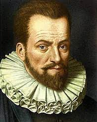
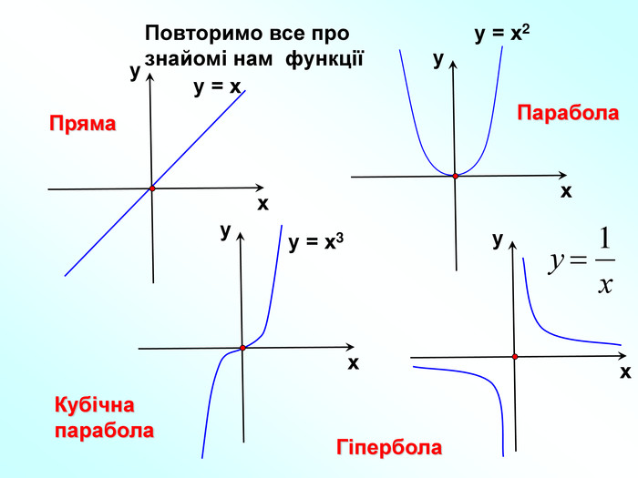
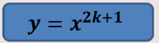
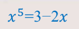
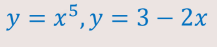
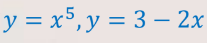
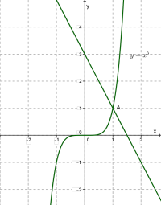

Степеневі функції
Для допитливих
Сучасні назви для позначення степенів запропонував голландський вчений Симон Стевін, який позначав степені у вигляді чисел, зображених у крузі.
Повторення
Означення степеневої функції
Степенева функція — це функцiя, в якiй f(x) дано у виглядi числа, помноженого на x у довiльному степенi. Цю функцiю можна записати так: f(x)=a*x^n .
Розрізняють види в залежності від nєN n=2k, n=2k+1:
Властивості степеневих функцій
1.Областю значень функції y= x-n, де n-парне натуральне число, є множина (0, −∞)
2.Очевидно, що проміжки (−∞; 0) і (0, −∞) є проміжками знакосталості функціїї y = x-n , де n-парне натуральне число.
3.Функція y= x-n, де n-парне натуральне число, є парною.
4.Функція y= x-n, де n-парне натуральне число, зростає на проміжку (−∞;0)
5. Функція y= x-n, де n-парне натуральне число, спадає на проміжку (0;-∞).
Приклад розв’язування
Приклад 1: Розв’язати рівняння 
Розв’язування:
1. Розглянемо дві функції 
2. Побудуємо графіки функцій 
3.За кресленням ми бачимо, що побудовані графіки перетинаються в точці А(1,1)
Отже, рівняння має один корін: х=1-це абсциса точки А.
